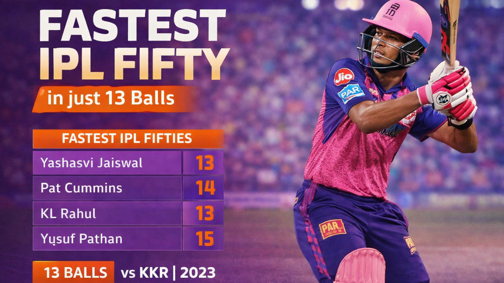

The IPL 2026 season witnessed a breathtaking moment of power-hitting as the record for the fastest fifty of the season was shattered during a high-octane clash. The milestone was reached in a staggering 13 balls, leaving the bowlers and the crowd at the stadium in complete awe. This explosive innings surpassed the previous record held earlier in the tournament, proving once again why the T20 format is so unpredictable. The batsman’s incredible strike rate and ability to find the boundary from the very first ball played a crucial role in shifting the momentum of the game. This record-breaking performance is now being hailed as one of the most clinical displays of aggressive batting in recent IPL history.
History was made last night! The record for the Fastest Fifty of the 2026 season was broken in just 13 balls. The batsman hit six sixes and three fours to reach the milestone. This is now the: